Международният кръг на НС „Най-добър млад автомонтьор и водач на МПС“ се проведе в Литва от 17 до 21 юни 2024г.
В надпреварата взеха участие Професионални училища от 8 държави - Полша, Латвия, Естония, Гърция, Словакия, Хърватска, Румъния и Литва. Любослав Райков от12д клас достигна с уменията си до 8-мо място, като получи равен брой точки с класиралите се на 5-то, 6-то и 7-мо място, наравно с участниците от Естония, Унгария и Словакия. Освен това получи Първо отличие и награда от "Континентал" за най-добра смяна на ангренажен ремък на Фолксваген и Първа награда – най-добро майсторско изпълнение за смяна на масло на автоматична скоростна кутия на Мерцедес. Гордеем се с постигнатите резултати!
От 28.04 до 30.04.2024 г. се проведе националния кръг на НС „Най-добър млад автомонтьор и водач на МПС“ в гр. Русе.
Отборът на ПГМЕЕ отново се представи отлично, като се класира на:
Първо място – Комплексно отборно „Най-добър млад автомонтьор и водач на МПС“
Първо място – Отборно „Най-добър автомонтьор“
Първо място – Индивидуално „Най-добър автомонтьор“ – Любослав Райков
Второ място – Индивидуално „Най-добър автомонтьор“ – Калоян Йорданов
Трето място – Отборно „Най-добър водач на МПС“
Тези отлични резултати бяха постигнати благодарение на перфектната и всеотдайна работа на целия екип: инж. Емил Ковачев, инж. Стефка Велкова, инж. Станимир Велинов, Пламен Петров и Алберт Калдерон. С големи благодарности към отбора на „Механото“ Любослав Райков, Калоян Йорданов, Ерхан Ибрям и техния ръководител инж. Емил Ковачев.
Любослав завоюва и правото да представи България на Международния кръг на Националното състезание „Най-добър млад автомонтьор и водач на МПС“ в Литва.
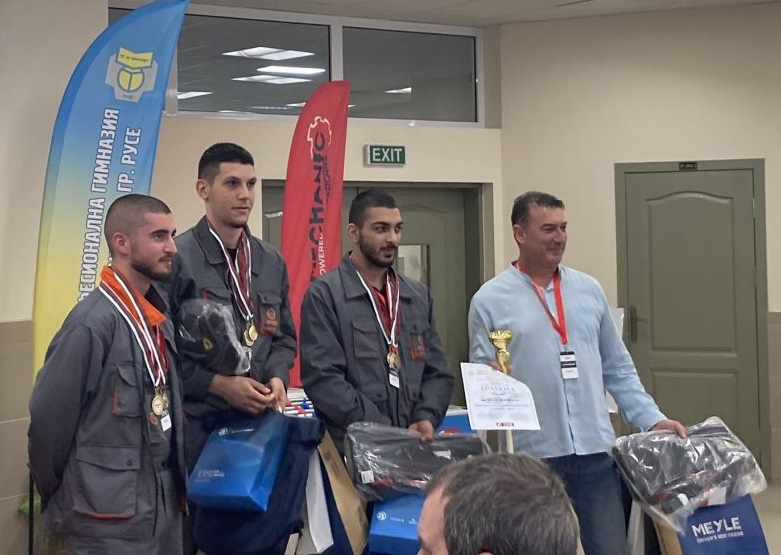
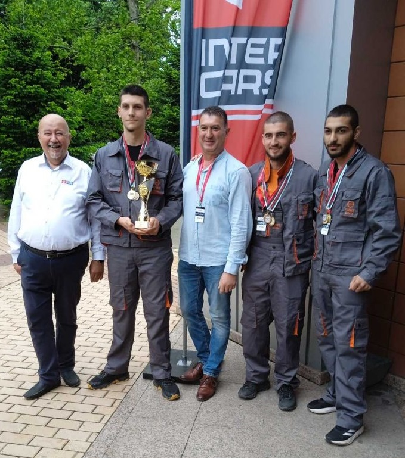
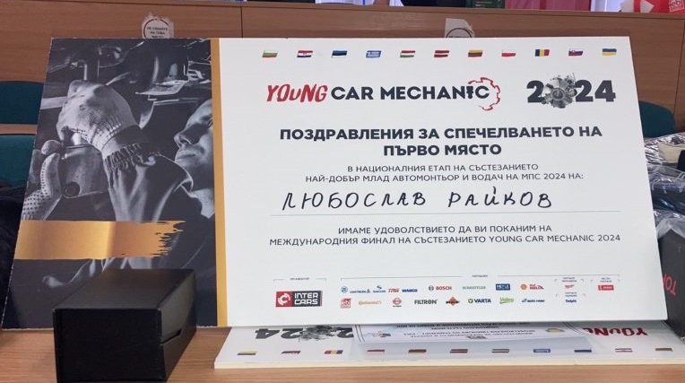
Безапелационна победа за отбора на ПГМЕЕ на Регионалният кръг на НС “Най-добър млад автомонтьор и водач на МПС”.
В периода 14-15 март 2024 година, град Хасково се превърна в сцена на ученически двубой на знания и умения в областта на автотранспортната техника.
Дванадесетокласниците на ПГМЕЕ Любослав Райков, Калоян Йорданов и Ерхан Ибрям доказаха, че са заслужили мястото си на върха, като спечелиха две отборни първи места - в категориите „Най-добър млад автомонтьор“ и „Най-добър млад водач на МПС“. Отборът бе подготвен от инж. Стефка Велкова, инж.Станимир Велинов, Алберт Калдерон, инж.Емил Ковачев и инж.Пламен Петров.
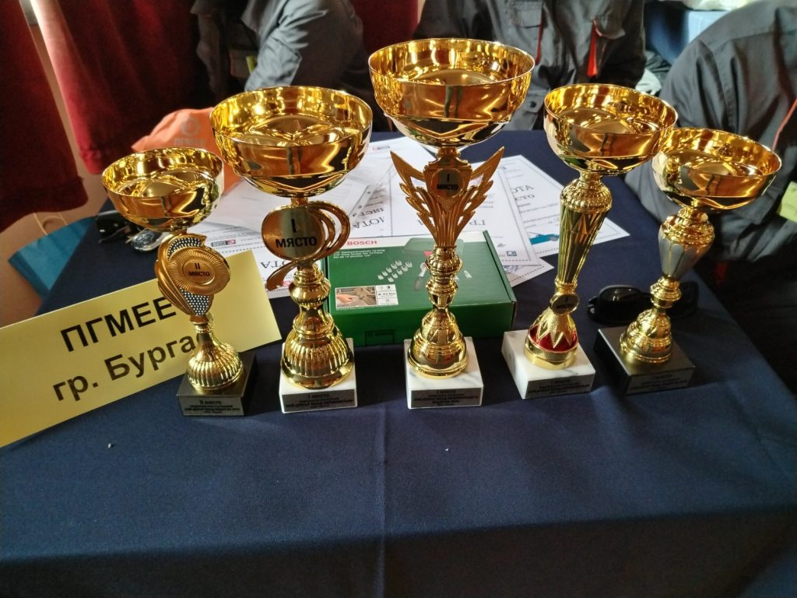
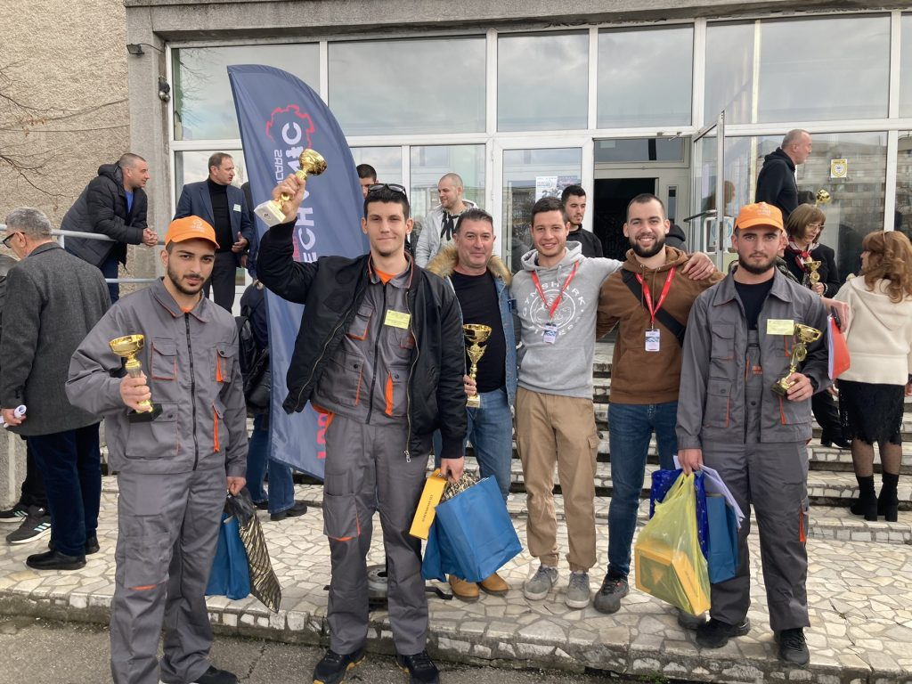
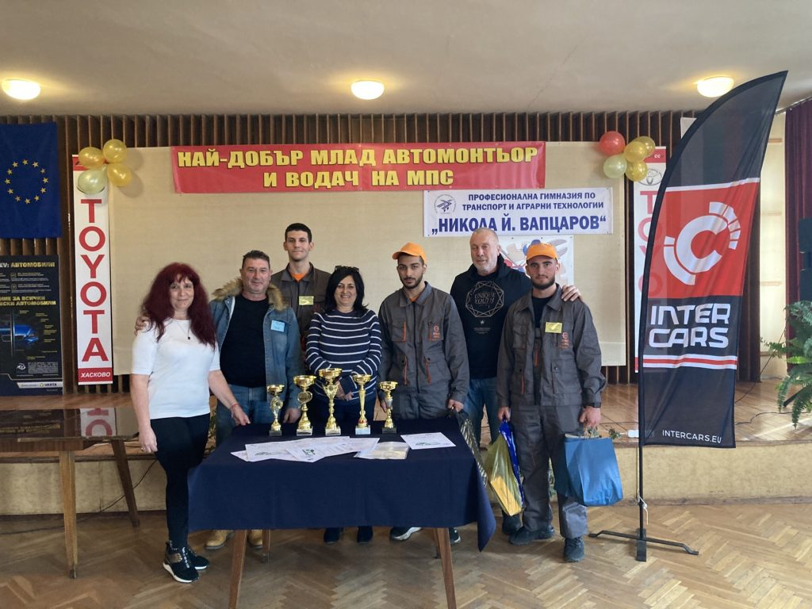
От 27.04. до 29.04.2023 г. ПГМЕЕ беше домакин на националният кръг на НС „Най-добър млад автомонтьор и водач на МПС“.
ПГМЕЕ бе представен от: Янислав Христов Михайлов 11д клас, Константин Янчев Илиев 12г клас и Атанас Георгиев Брадев 12д клас. Отборът бе подготвен от инж. Стефка Велкова, инж.Станимир Велинов, Алберт Калдерон, инж.Станимир Христов и Пламен Петров.
Отборът на ПГМЕЕ се класира съответно – 1-во място отборно водач на МПС, 3-то място отборно монтьор и 1-во място индивидуално водач на МПС.
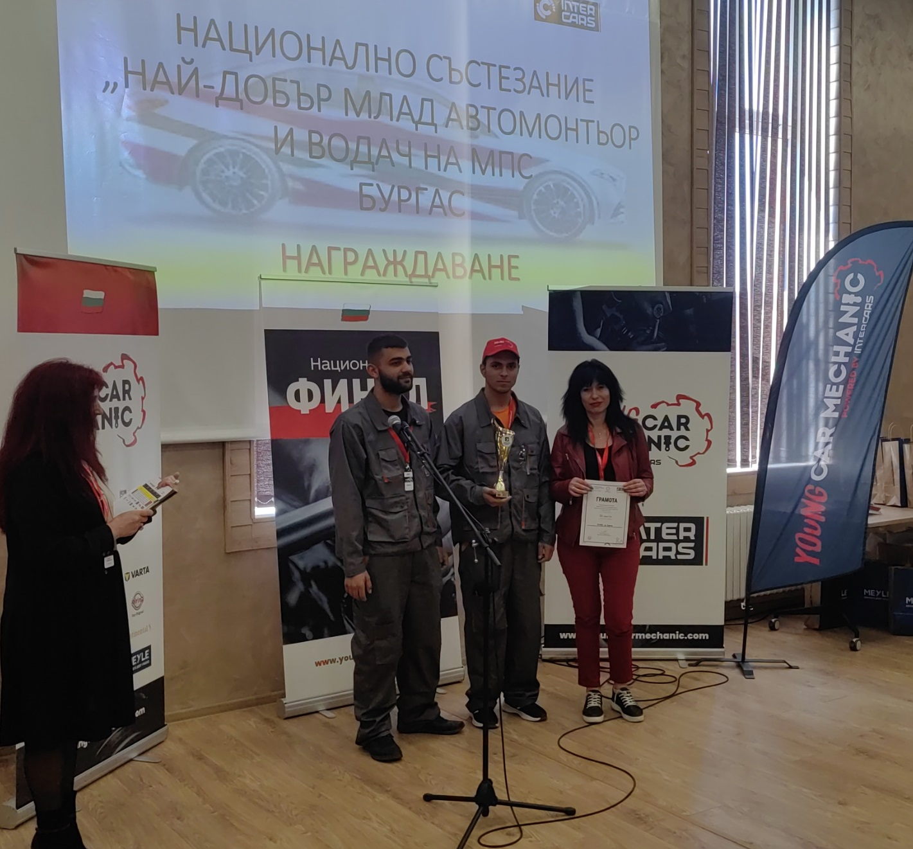
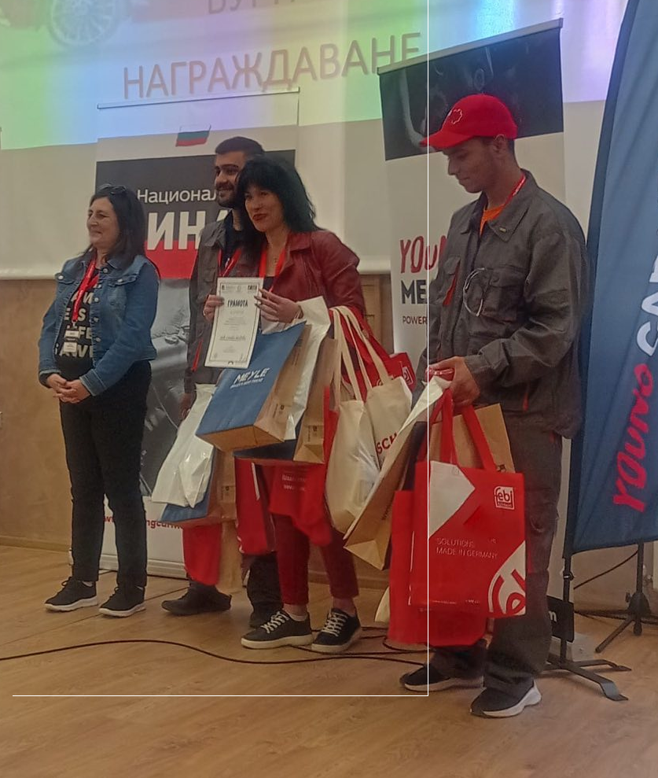
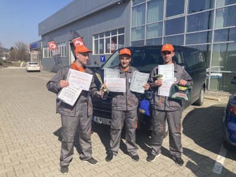
На 25 и 26.03. 2022 г. се проведе регионалния кръг на състезание „Най-добър млад автомонтьор и водач на МПС“ в гр.Габрово. Отборът на ПГМЕЕ в състав: Николай Мариянов Димов от 12 г клас, Кристиян Пламенов Терзиев от 12 г клас и Звездомир Руменов Стоянов от 11 г клас в комплексното отборно класиране и отборно класиране за най-добър монтьор зае второ място. Кристиян Пламенов Терзиев се класира на трето място в индивидуалното класиране за най-добър монтьор. Отборът бе подготвен от инж. Стефка Велкова, инж.Станимир Велинов, Алберт Калдерон, инж.Станимир Христов и Пламен Петров.
Регионалният кръг на състезанието „Най-добър млад автомонтьор и водач на моторно превозно средство“ 2021г. се проведе в гр.Силистра. На комплексното отборно класиране и отборно класиране за най-добър монтьор Иляз Виждан Шукри и Емил Дончев Георгиев заеха второ място. Емил Дончев Георгиев се класира на трето място в индивидуалното класиране за най-добър монтьор, а Златомир Радомиров Стойков 1-во място отборно за водач на МПС. Ръководители на отбора- инж.Стефка Велкова, инж. Иван Манов, Алберт Калдерон, инж.Станимир Христов, инж.Пламен Петров, инж.Станимир Велинов.
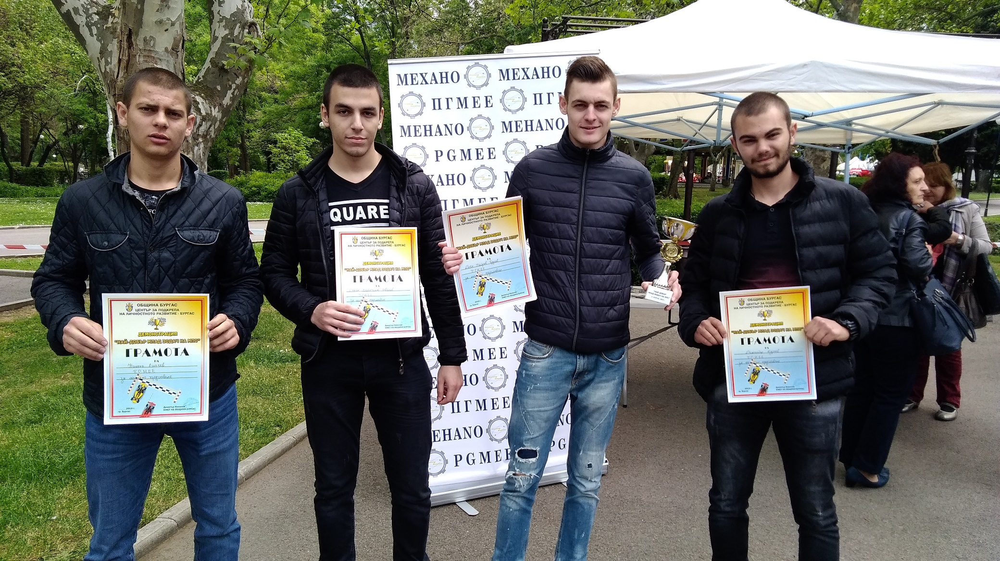
В състезанието „Най-добър млад водач на МПС“, което се проведе на 8 май 2019г. се включи отбора от четирима ученици от ПГМЕЕ.Участие в демонстрацията взе и футуристичният „Batkomobil“ на отбор„Mehano“ от ПГМЕЕ, който преди няколко месеца премина успешно предварителния кръг на състезанието с коли на бъдещето на Shell Eco-marathon. Състезателите от ПГМЕЕ получиха напълно заслужено купи и грамоти за участие в първата по рода си демонстрация по майсторско управление на автомобил.
Регионално състезание “Най-добър млад автомонтьор и водач на МПС” град ГАБРОВО, 23-24 март 2018 година
Отборът на Професионална гимназия по механоелектротехника и електроника – гр.Бургас в състав: Васил Николов Ангелов, Алириза Сами Осман, Велин Донков Иванов и Златко Красимиров Харбалиев
се представи достойно в състезанието като отново ни зарадва с призови места:
1. Златко Красимиров Харбалиев – ПГМЕЕ – гр. Бургас-второ място в Индивидуално класиране за „Най-добър млад водач на МПС“
2. Велин Донков Иванов – ПГМЕЕ – гр. Бургас-трето място в Индивидуално класиране за „Най-добър млад автомонтьор“
3. Отборно класиране за „Най-добър млад автомонтьор“-трето място
4. Отборно класиране за „Най-добър млад водач на МПС“-второ място
5. Отборно комплексно класиране за „Най-добър автомонтьор и водач на МПС“-трето място.
Ръководители на отбора- инж.Стефка Велкова, инж.Иван Манов, Алберт Калдерон.
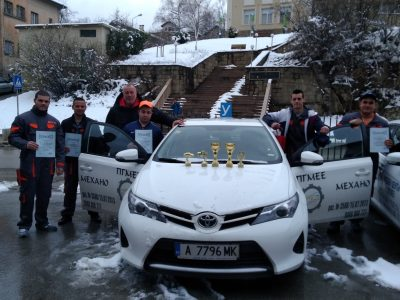
На 17 и 18 март 2017г. в гр.Казанлък се проведе регионално състезание “Най-добър млад автомонтьор и водач на МПС”. Учениците на ПГМЕЕ – гр.Бургас взеха две трети места:
Живко Нейчев от 12г клас – трето място за най-добър монтьор в индивидуалното състезание,
Слави Тодоров от 12г клас – трето място за най-добър водач на МПС.

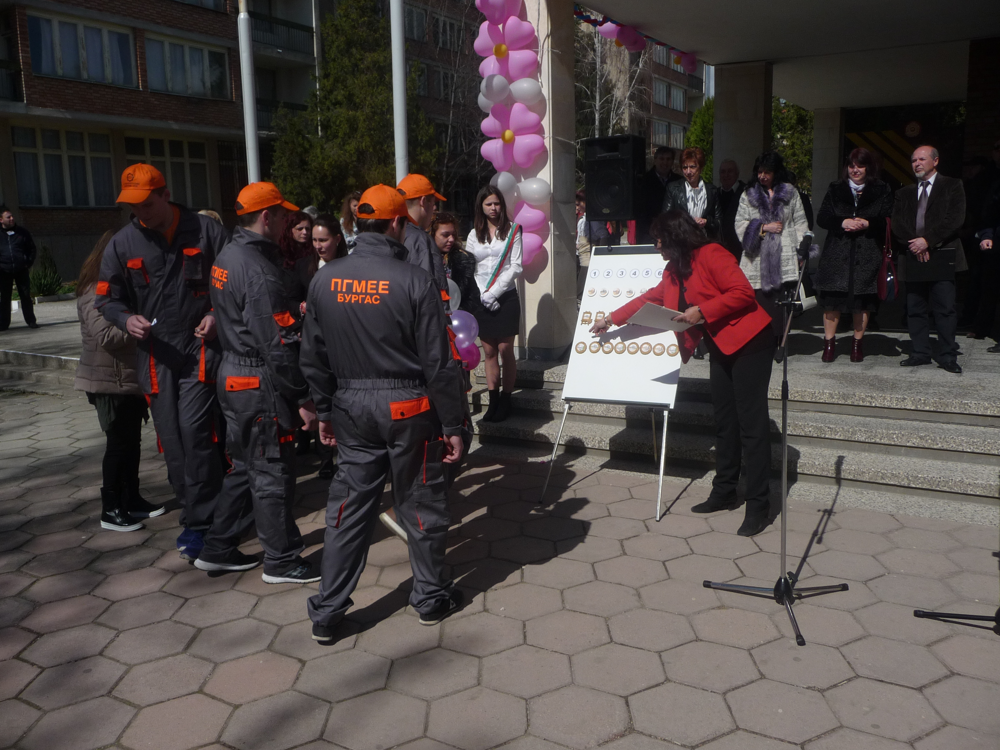
На 25 и 26 март 2016г. се проведе състезанието „Най-добър млад автомонтьор и водач на МПС”. На първо място в направление „Най-добър млад водач на МПС” се класира отборът на ПГМЕЕ – Бургас. В индивидулното класиране в тази дисциплина триумфира нашия ученик Живко Великов а в направление „Най-добър автомонтьор“ ПГМЕЕ зае трето място. В отборното комплексно класиране на състезанието „Най-добър млад автомонтьор и водач на МПС” ПГМЕЕ зае второ място.
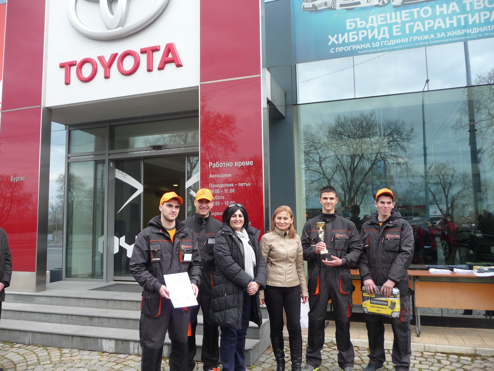
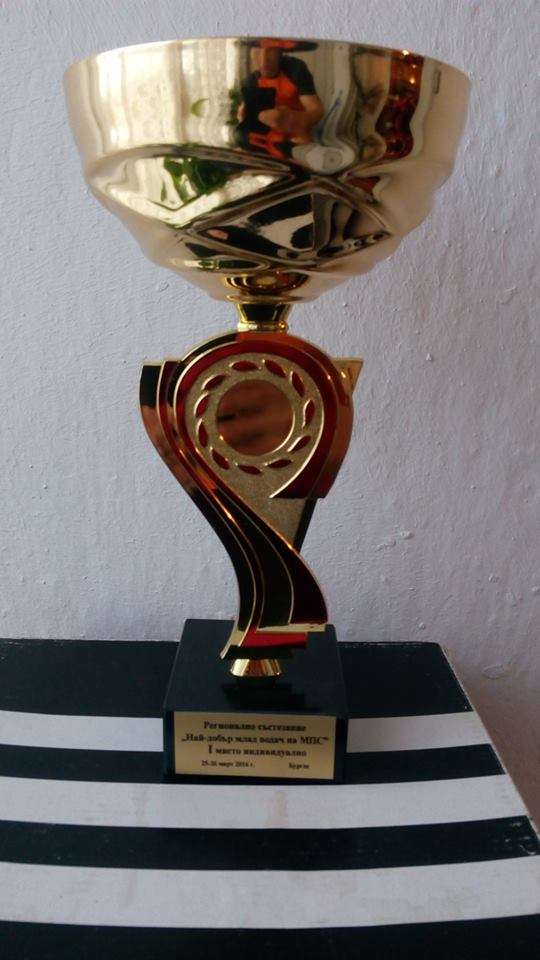